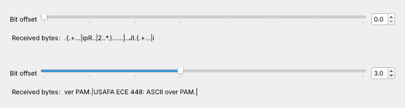
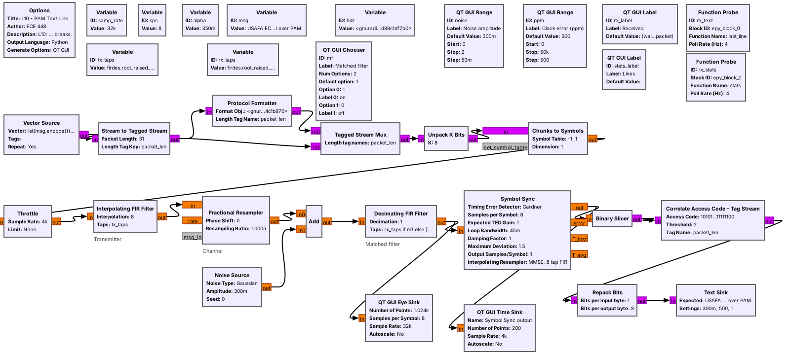

L10 Lab — PAM Link#
PAM Link
Build the packet transmitter, watch noise break the text and the matched filter repair it, and send your own line through a PlutoSDR.
L10 Lab · Module 4: Digital Modulation · Dr. Neil Rogers
Learning Objectives
- I can implement a PAM link that transmits and receives ASCII text end-to-end.
From Lesson to Bench
Pre-Lab: run the link and work out one packet.
Bench: find the bytes by hand, build the transmitter, turn up the noise and the clock error, then use a PlutoSDR.
Writeup: explain what you saw, in words.
Lesson 10 sent a line of text over the PAM link of Lesson 9. Today you first line up the bytes by hand, with no packets, to see the problem the access code solves. Then you build the packet transmitter yourself, turn up the noise until the simulated link breaks, switch the matched filter off and on, and then run the same link on a PlutoSDR. The lab packet has three parts, and you turn it in once, complete, before Lesson 11. Part 1, the Pre-Lab, is on your own before the period: run L10-pam-link.grc once and work out the bits and time in one packet and the length field of a line of your own. Part 2 is what you observe in class. Part 3, the Writeup, explains it in words.
Questions 1 to 6 run on your laptop and transmit nothing. Question 7 transmits, into a cable only, as the PlutoSDR frame below describes.
Part 1: Before the Period
L10-pam-link.grcruns and shows the received line.Work out one packet’s bits and time.
Write your own line’s length field and first byte.
Do the Pre-Lab before you arrive. Question 1 checks that the link flowgraph opens and runs on your laptop: if GRC reports an error, the L5 lesson page lists the install checks, and EI before the lab is the place to fix it.
Question 2 is the packet arithmetic from the lesson: the bits and time in one packet of the default line and how many packets 30 s holds, and the length field and first character of a line of your own choosing. You will see both on the time sink of the transmitter you build in Part 2.
Pre-Lab Check
Check |
Expected |
|---|---|
One packet |
344 bits, 86 ms |
Packets in 30 s |
about 349 |
Length field for 31 bytes |
|
These follow from Lesson 10. The packet size is exact: 64 bits of access code, 32 of header, and 8 per byte of the line. The bench is where you find out how much noise the link takes, by turning the noise up and watching.
Part 2: Bytes Without Packets
Open and run
L10-pam-raw.grc. It is the L10 link with no access code and no header: the transmitter sends the line’s bytes back to back, and the receiver groups the bits into bytes from whichever bit it starts listening on. Each run starts at a random bit.Read the Received bytes label. A byte that is not a printable ASCII character shows as a dot, and a newline as a bar.
Step the Bit offset from 0 up, one at a time, waiting about 2 s at each, until the text reads. Record that offset for Question 3(a).
Stop the flowgraph and run it again. Find the offset again, and record it. Repeat for a third run.
Now open and run
L10-pam-link.grc, the version with packets. Stop and start it three times, and record for Question 3(b) how long the first line takes to appear each time and whether you had to adjust anything.
The Access Code Lines Up the Bytes

Without packets, one offset in eight reads, and it changes every run.
The access-code search finds the right offset by itself.
The figure shows one run of L10-pam-raw.grc. At an offset of 0 the receiver groups the bits one to seven bits away from the true byte boundary, and almost nothing it prints is a character. At an offset of 3 the same bits read as the line of text. The right offset depends on the bit at which the receiver started listening, so it changes from run to run, and a person has to find it again each time. The receiver in the 2025 reading, Mathys (2016), Motivating Undergraduate Communication Theory Using GNU Radio, used this kind of hand-set delay.
The access code removes that step. Correlate Access Code - Tag Stream compares every 64-bit window of the received bits with the code, so it finds the first bit of each packet wherever the receiver started, and Repack Bits starts each byte there. That is why L10-pam-link.grc shows text within about a second every time it starts.
Part 2: Build the Transmitter
Start GRC and choose File, New, QT GUI. Do not open
L10-pam-tx.grc; build it yourself.Set
samp_rateto 32000. Add Variablessps= 8,alpha= 0.35,msg= your line from Question 2(b) in quotes,hdr=digital.header_format_default(digital.packet_utils.default_access_code, 0), andtx_taps=firdes.root_raised_cosine(sps, samp_rate, samp_rate/sps, alpha, 11*sps).Add a Vector Source: type byte, vector
list(msg.encode()) + [10], repeat Yes. Then Stream to Tagged Stream: type byte, packet lengthlen(msg) + 1, length tag key"packet_len".Add a Protocol Formatter with format object
hdrand length tag name"packet_len", and a Tagged Stream Mux with 2 inputs and the same tag name. Connect Stream to Tagged Stream to the formatter and to the mux’s second input, and the formatter to the mux’s first input.Add Unpack K Bits with K = 8, then Chunks to Symbols: input byte, output float, symbol table
[-1, 1].Add a Throttle (float, sample rate
samp_rate/sps) and an Interpolating FIR Filter (float in and out, interpolationsps, tapstx_taps).Add a QT GUI Time Sink on the Throttle’s output: type float, 112 points, sample rate
samp_rate/sps, trigger mode Tag, trigger tag keypacket_len. Add a QT GUI Frequency Sink (float, bandwidthsamp_rate) on the filter’s output. Every arrow must be black.Run it. Screenshot the canvas for Question 4(a) and the time sink for Question 4(b), and read the spectrum’s edges for Question 4(c).
Part 2: Noise, Matched Filter, and Clock Error

Open and run
L10-pam-link.grc. The Lines label counts the lines received since a slider or the switch last moved.Note the eye and the Symbol Sync output at the default noise, 0.3. Then, with the clock error at 500 ppm and the matched filter on, set the noise amplitude to 0.5 and raise it by 0.1 at a time. At each step, wait about 20 s and watch the Lines label, the eye, and the Symbol Sync output. Record for Question 5(a) the setting where lines start to break and the setting where no line arrives intact, and describe the displays for Question 5(b).
Near 1.1, wait for a line with a wrong character in the Received label and screenshot it for Question 5(c).
Set the noise to 0.5. Switch the matched filter off, wait 20 s, and record the Lines label and the eye for Question 5(d). Switch it back on and record them again.
Set the noise back to 0.3. Set the clock error to 0, then raise it to 10,000, 20,000, 30,000, and 40,000 ppm in that order, without stopping the flowgraph. At each, wait about 20 s and record the Lines label and the eye’s appearance for Question 6(a). Screenshot 10,000 ppm for Question 6(b).
Stop the flowgraph, run it again so the loop locks at the default 500 ppm, and then type 40,000 into the clock-error box in one jump. Record the Lines label after 20 s in the last column of Question 6(a).
If No Text Arrives
If the Received label stays at “(waiting for a packet)”
Close the flowgraph and run it again with the sliders at their defaults, a noise amplitude of 0.3 and a clock error of 500 ppm, where every line should arrive within about a second. In your own transmitter, check that the Stream to Tagged Stream packet length is len(msg) + 1, so that it counts the newline, and that all three tag names are "packet_len", with the quotes. If you changed the message, keep it on one line.
Part 2: The Link on a PlutoSDR

We cable one Pluto’s TX port to its RX port through a 30 dB attenuator, at 915 MHz.
The cable goes on before the flowgraph runs, and we never connect an antenna.
L10-pam-pluto.grc is the Lesson 10 link with the simulated channel replaced by a PlutoSDR. The transmit half raises the 32 kHz baseband stream to 1.024 MS/s and sends it from the Pluto’s TX port at 915 MHz; the receive half takes it from the RX port, lowers it to 32 kHz, and runs the same matched filter, Symbol Sync, and access-code search. An AGC sets the received level, and a Costas Loop, which Lesson 15 explains, locks to the carrier’s phase.
In class we transmit only into a cable, into a shielded enclosure, or at very low power in an ISM band, and only when the lesson says to. This question transmits only into the cable between the Pluto’s own TX and RX ports, through an inline 30 dB SMA attenuator. The TX attenuation slider opens at 60 dB and cannot go below 30 dB. Never set TX attenuation below 30 dB or change the slider’s range; the RX input is rated to only a few dBm, and the transmitter can put out more than that.
PlutoSDR Steps
With the Pluto unplugged, connect its TX port to its RX port with a short SMA cable and an inline 30 dB SMA attenuator. Do not connect an antenna, and do not connect the cable without the attenuator.
Plug the Pluto into USB and run
iio_info -sat the radioconda prompt; it should list a PlutoSDR context. The flowgraph uses the Pluto’s default address,ip:192.168.2.1.Open and run
L10-pam-pluto.grc. In simulation, the constellation shows two clusters on the horizontal axis within a few seconds, one on each side of zero. Never set TX attenuation below 30 dB or change the slider’s range.If no line arrives within 5 s, switch Polarity. If neither setting works, raise the TX attenuation by 10 dB and try both again. Screenshot the window once lines arrive, for Question 7(a).
Stop and start the flowgraph three times, and record each time which polarity delivers lines, for Question 7(b).
Stop it, put your line from Question 2(b) in
msg, and run it again for Question 7(c). Stop the flowgraph and unplug the Pluto before you disconnect the cable.
Part 3: After the Lab
Explain why the text goes from all to none so quickly.
Explain what the matched filter did.
Compare the clock-error limit with a real crystal, and explain the polarity.
The Writeup is four questions, answered in words. The first asks why your link went from every line to none over a small change in the noise, and what that means for a real radio. The second asks why switching off the matched filter broke the text. The third compares the clock error your link tolerated with the error between two real crystals, and asks what would happen without Symbol Sync. The fourth asks why the polarity that works on the Pluto changes from run to run, and what change to the receiver would make the switch unnecessary.
Lab Packet
L10-pam-raw.grc: the link with no packets and a bit-offset slider. No hardware needed.
L10-pam-pluto.grc: the link on one PlutoSDR, transmitting at 915 MHz into a cable from its TX port to its RX port. Needs a PlutoSDR.
Looking Ahead
Lesson 11 writes and packages custom blocks.
Lesson 15 explains the Costas Loop that locked to the Pluto’s carrier.
Keep your transmitter flowgraph and your tables. Lesson 11 starts Module 5 with out-of-tree modules and custom blocks, including Python blocks like the Text Sink that displayed every line today. Lesson 15, on mPSK, explains carrier recovery, the job the Costas Loop did on the Pluto, and why a phase-modulated signal can lock upside down.